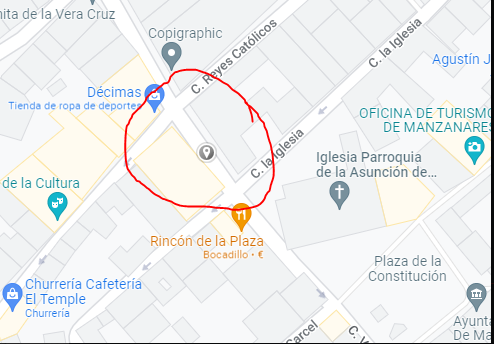

Sobre Pandora
La página web oficial de Pandora
Contacto
FAQ
Políticas
Sobre nosotros
!!!
Pandora es un Quiosco situado en el pueblo Torreblanca que vende una gran variedad de cosas, desde cromos de Pokémon hasta figuras y cómics.
Nos puedes encontrar aquí:
